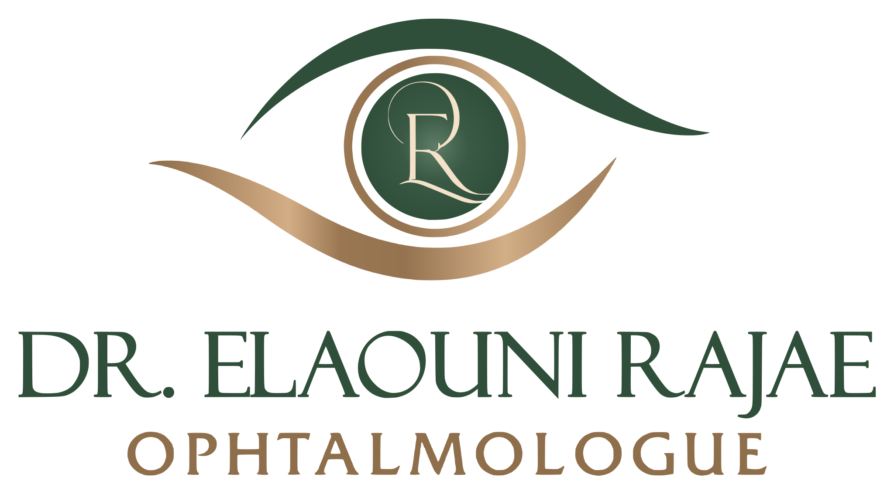
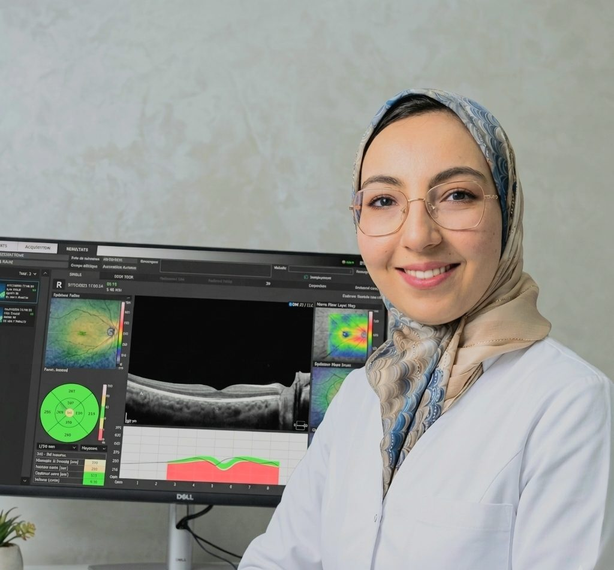
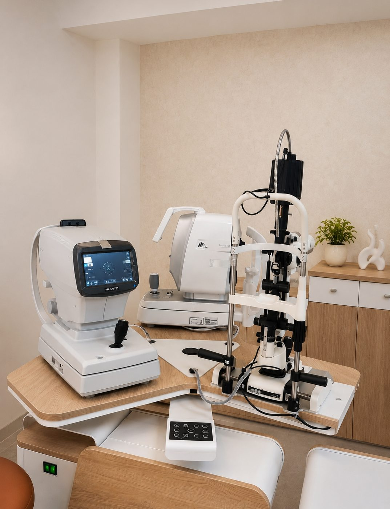
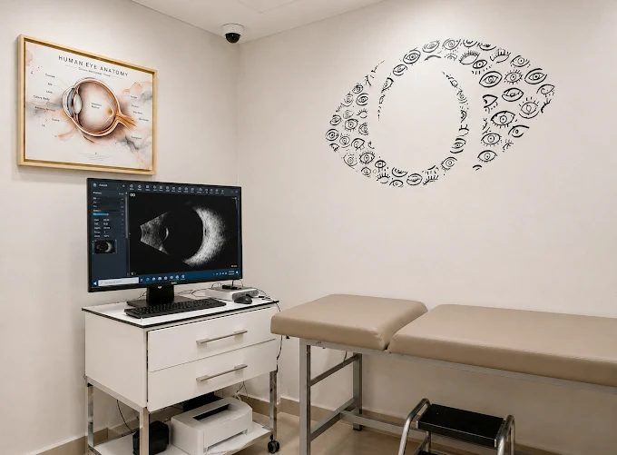
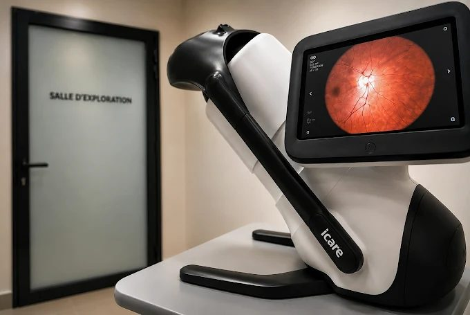
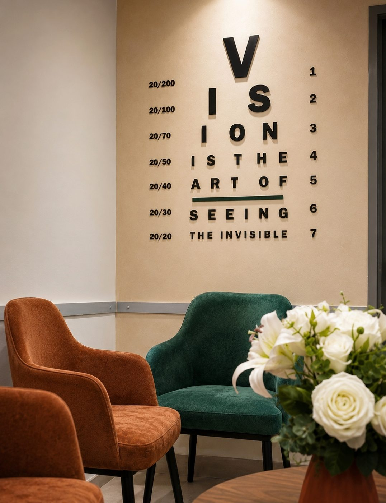

Ophtalmologue à Fès
Prendre soin de vos yeux, à chaque âge de la vie
Consultation, dépistage et chirurgie oculaire pour adultes et enfants, Avenue des FAR.

Nos services
Une prise en charge complète de vos yeux

Votre ophtalmologue
Dr Elaouni Rajae
Compétences médicales, technologies modernes et approche humaine : l’écoute et la confiance au cœur de chaque consultation.
- Lauréate de la Faculté de Médecine de Fès
- Ancienne interne au CHU Hassan II, Fès
- Cataracte et chirurgie réfractive, Royaume-Uni
- Lentilles de contact, Université Isabel I, Espagne
Plateau technique
Des équipements modernes

Lampe à fente
Examen détaillé de l’œil

Rétinographe
Photo du fond d’œil

Échographie et OCT
Imagerie de la rétine
Le cabinet
Un lieu pensé pour votre confort




Avis patients
Ils nous font confiance
Note Google : [NOTE] / 5 · [NOMBRE] avis
[Avis Google à intégrer automatiquement]
[Prénom du patient]
Infos pratiques
Préparer votre visite
Questions fréquentes
Comment prendre rendez-vous ?+
Par téléphone au 05 32 39 18 18, par message WhatsApp au 07 62 97 08 15 ou directement au cabinet.
Quels documents apporter ?+
Votre CIN et la fiche d’adhésion de votre mutuelle.
Recevez-vous les urgences ?+
Oui. Appelez le cabinet pour être orienté rapidement.
Combien dure une consultation ?+
Environ 15 minutes en moyenne, selon les examens nécessaires.
Contact et accès
Nous trouver
Avenue des FAR, Résidence Oumnia
3ème étage, Bureau N°17, Fès · Entre Biougnach et Eight Pool Academy
 Itinéraire Google Maps
Itinéraire Google Maps